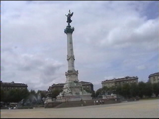
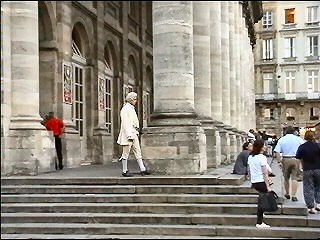
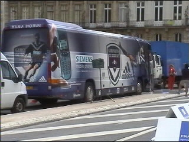
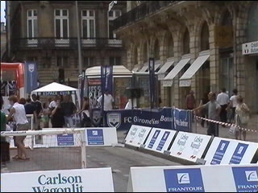
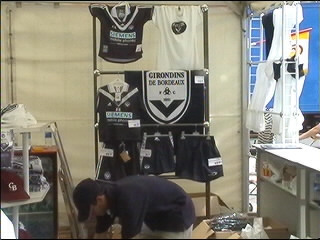
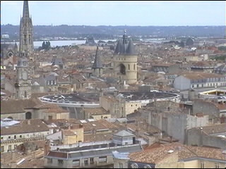
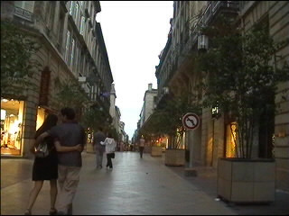
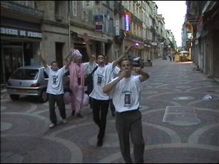
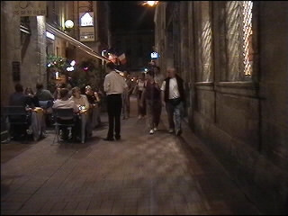
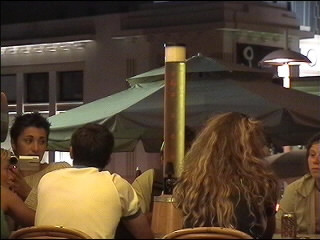

|
Bordeaux |

Esplanade des Quinconces. Het grootste stadsplein
van Europa. Hier staat een monument ter
nagedachtenis aan de Girondisten. Een prima
tref- en herkenningspunt.

Het Grand Théatre.

Tegenover dit kolossale gebouw stond de spelers-
bus van Bordeaux.

Dit vanwege promotionele activiteiten.

Dit noemen ze merchandise.

Kijkje op de stad vanuit de St. André-kathedraal.
Het gebouw in het midden is NIET het stadion!

Rue Ste. Catherine, de langste winkelstraat.

Fransen kunnen echt uit de bol gaan maar ze
spreken beroerd of geen Engels.

In het oude centrum struikel je over de bars en
restaurantjes.

Dit verstaan ze in Frankrijk onder een meter bier!
Eten kun je in alle talen van de wereld van McDrek tot onvoorstelbaar duur
en chique. Bij sommige McDreks kun je bier krijgen. Dat is relatief goedkoop.
Bier is trouwens vrij duur. Iets duurder nog dan bij ons in de grote steden.
Bordeaux heeft geen tram of metro. Het centrum is echter zeer
overzichtelijk. Alleen de weg naar het stadion is lang. Je zult een taxi
moeten nemen. Er zijn cafés in de buurt van het stadion en er is zelfs een
supporterscafé. Je herkent dat café aan een Coca Cola/voetbal-reclame op de gevel.
Als je bier van de tap wilt, vraag dan om bière de pression. Dat is meestal
goedkoper. Als je alleen uit flessenbier kunt kiezen, neem dan Kronenbourg.
Buitenlandse merken zoals Heineken en Carlsberg zijn veel duurder.
©KPD